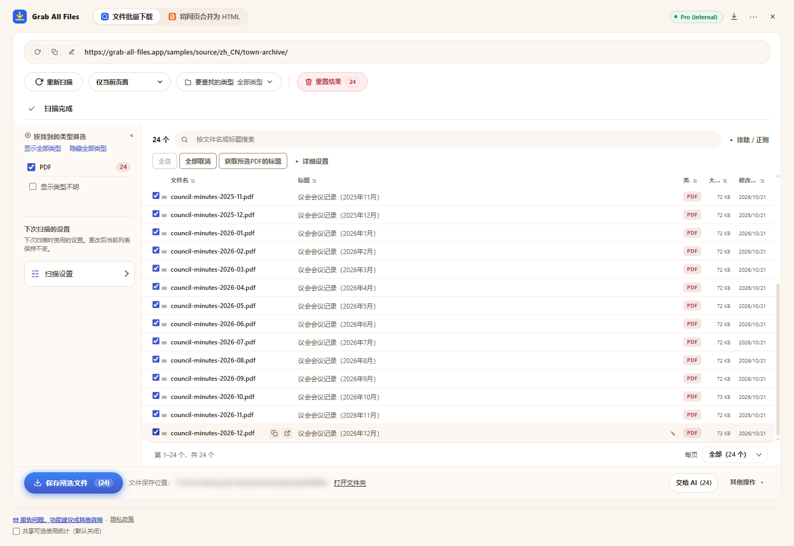

Grab All Files 的真实输出
一次下载 24 个 PDF（Pro）
扫描了虚构小镇的议会会议记录存档（2025年1月至2026年12月，每月一份，共 24 份 PDF），选中全部 PDF，一次保存完毕。免费版每次下载最多保存 10 个文件，所以这需要分三次；Pro 没有每次下载的数量限制。文件名由扩展程序根据每个 PDF 的标题生成。
输出文件
- 议会会议记录（2025年1月）.pdf
- 议会会议记录（2025年2月）.pdf
- 议会会议记录（2025年3月）.pdf
- 议会会议记录（2025年4月）.pdf
- 议会会议记录（2025年5月）.pdf
- 议会会议记录（2025年6月）.pdf
- 议会会议记录（2025年7月）.pdf
- 议会会议记录（2025年8月）.pdf
- 议会会议记录（2025年9月）.pdf
- 议会会议记录（2025年10月）.pdf
- 议会会议记录（2025年11月）.pdf
- 议会会议记录（2025年12月）.pdf
- 议会会议记录（2026年1月）.pdf
- 议会会议记录（2026年2月）.pdf
- 议会会议记录（2026年3月）.pdf
- 议会会议记录（2026年4月）.pdf
- 议会会议记录（2026年5月）.pdf
- 议会会议记录（2026年6月）.pdf
- 议会会议记录（2026年7月）.pdf
- 议会会议记录（2026年8月）.pdf
- 议会会议记录（2026年9月）.pdf
- 议会会议记录（2026年10月）.pdf
- 议会会议记录（2026年11月）.pdf
- 议会会议记录（2026年12月）.pdf
已选中 24 个 PDF、即将保存时的扩展程序（保存位置已模糊处理）

制作方式
- 源页面
- /samples/source/zh_CN/town-archive/
- 扩展程序
- Grab All Files 5.8.31
- 浏览器
- Chrome 156.0.8078.48 (Windows 11)
- 版本
- Pro
- 制作日期
- 2026-10-28
- 设置
- 链接深度：仅当前页面
- 文件类型：仅 PDF
- 已选文件：24
- 保存位置：浏览器的下载文件夹（GrabAllFiles 文件夹）